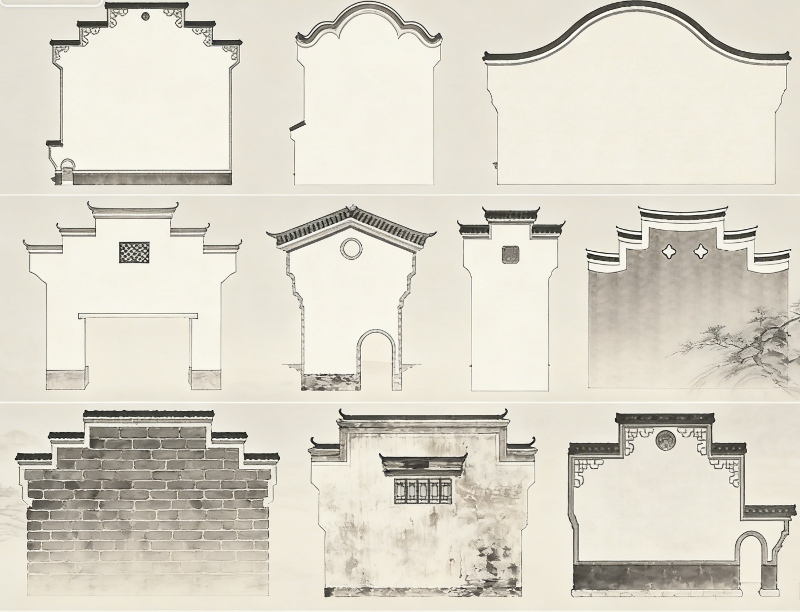

壹
01
墙体结构剖面 · 形制谱系

形制谱系详解
点击箭头 · 键盘 ←→ 翻页
贰
02
数据可视化分析
尺
壹 · 尺度参数
墙体尺度规制
Dimensional Standards
| 参数 | 数值 / 描述 | 来源 |
|---|---|---|
| 超出屋脊高度 | 0.5 – 0.9 米 | 安徽新闻网 |
| 墙体厚度 | 20 – 30 厘米（小青砖砌筑） | 徽派建筑专业资料 |
| 退阶尺寸 | 随屋面坡度自然变化，灵活确定 | — |
| 气候影响 | 尺度比例对夏冬太阳能利用有显著影响 | 《建筑节能》Ecotect |
叠
贰 · 叠数分布
阶梯叠数与等级
Layer Count × Grade
制
叁 · 形制对照
叠数形制对照表
Layer-Grade Reference
| 叠数 | 形制名称 | 适用建筑 | 等级 |
|---|---|---|---|
| 一叠 | 一封山 | 普通民居、附属建筑 | 基础 |
| 两叠 | 二马墙头 | 小型民居 | 较常见 |
| 三叠 | 三山屏风 | 最主流结构 | 最普遍 |
| 四叠 | — | 规模较大民居 | 常见 |
| 五叠 | 五岳朝天 | 宗祠、大户 | 高等级 |
| 七叠 | — | 极少数大型民居 | 极罕见 |
座
肆 · 座头形制
座头类型分布
Cap-Head Distribution
型
伍 · 座头详解
四大座头形制对照
Cap-Head Type Reference
| 类型 | 结构特征 | 文化寓意 | 适用 |
|---|---|---|---|
| 鹊尾式 | 喜鹊尾羽状翘起 | "抬头见喜"，吉祥喜庆 | 最常见 |
| 印斗式 | 方斗砖（田字/卍字纹） | 官印象征，激励读书入仕 | 富裕徽商 |
| 朝笏式 | 形似朝笏 | 崇文重仕，对做官的期盼 | 体现志向 |
| 坐吻式 | 吻兽（哺鸡/鳌鱼/天狗） | 镇宅辟邪，祈福禳灾 | 祠堂寺庙 |
功
陆 · 功能权重
多维功能权重图
Functional Weight Radar
效
柒 · 功能评分
七大功能权重明细
Function Score Details
| 功能 | 评分 | 说明 |
|---|---|---|
| 防火 | ★★★★★★★★★★ 10 | 原名"封火墙"，核心功能 |
| 审美装饰 | ★★★★★★★★★★ 9 | "青砖小瓦马头墙" |
| 防风 | ★★★★★★★★★★ 8 | 坚固墙体可防风 |
| 调节气候 | ★★★★★★★★★★ 8 | 吸热采光，冬暖夏凉 |
| 文化象征 | ★★★★★★★★★★ 8 | 座头寓意丰富 |
| 家族地位 | ★★★★★★★★★★ 7 | 叠数越多等级越高 |
| 分割空间 | ★★★★★★★★★★ 7 | 保证私密与安全 |
构
捌 · 构造部件
墙体构件分解
Structural Component Breakdown
| 构件 | 位置/材质 | 功能 |
|---|---|---|
| 垛头（阶梯） | 屋面层层叠落 | 核心防火结构，随屋面坡度迭落 |
| 搏风板（金花板） | 垛头顶端，木质 | 保护墙头，防雨防腐 |
| 座头（马头） | 搏风板上方，砖雕 | 装饰与寓意载体 |
| 三线排檐砖 | 墙顶挑砖 | 承托小青瓦，形成檐口 |
| 小青瓦 | 墙顶覆盖 | 防水排水，两坡墙檐 |
保
玖 · 保护数据
黄山市遗产保护
Huangshan Heritage Data
8,032 处
不可移动文物点
安徽省黄山市
6,264 幢
皖南古民居
截至2013年
101 个
保护古村落
"百村千幢"工程
1,065 幢
保护古民居
黄山市文化委员会
护
拾 · 保护规模
遗产保护数量对比
Conservation Scale Comparison
典
拾壹 · 法规典例
标准规范与保护案例
Standards & Conservation Cases
| 地区/机构 | 内容 | 年份 |
|---|---|---|
| 国家建筑标准 | 03J922-1《地方传统建筑—徽州地区》正式实施 | 2003.12.1 |
| 安徽歙县 | 投入2000余万元，改造1000余幢平顶房为马头墙传统样式 | 2006年 |
| 明代弘治年间 | 知府何歆推行"五家为伍，甓以高垣"政令，五年筑墙两千余道 | 1503年 |
| 北宋遗构 | 浙江东阳发现景祐五年（1038年）马头墙雏形遗构，为现存最早实证 | 1038年 |
缓速自动滚动 · 悬停暂停
叁
03
知识问答
第 1 题 / 共 8 题
◆ 知识科普
问答结束
0 / 8